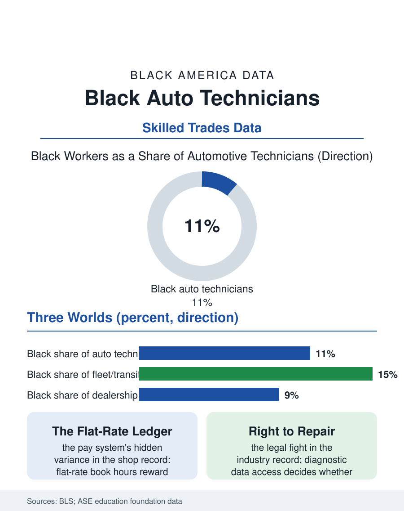

Black Employment
Under the Hood: Black Auto Technicians
Auto technicians hold the strongest Black share in the trades, concentrated in fleets and independent shops, as the electric transition rewrites the skill base. The mechanic file.

The auto mechanic, formally the automotive service technician, diagnoses machines that have become computers on wheels, and the occupation's federal counts show Black workers at roughly ten or eleven of every hundred technicians, above the other trades' shares and still below the Black share of the car-owning public they serve. The dealership bays, independent shops, and fleets of America employ them in a labor market being rebuilt by the electric vehicle. This article reads the mechanic file.
The Shop Floor's Three Worlds
The occupation divides into three economies with distinct demographics. Dealership service departments offer manufacturer training, factory certifications, and the steadiest benefits, hiring through the technical colleges' automotive programs, where Black enrollment is strong in the urban campuses. Independent shops, the industry's numerical bulk, hire through the counter and the referral, and they feed the business file in this atlas, since the independent shop is where the Black master technician becomes the Black shop owner of the auto repair business file. Fleets, transit agencies, utilities, delivery companies, employ technicians under civil service or union terms at wages and stability the retail side rarely matches, and Black technicians are concentrated in this third world in the transit metros, a public-sector pattern the employment files record across occupations. Pay across all three worlds runs on the flat-rate system, the book-hour piecework that pays for the job's standard time rather than the clock, a system that rewards the fast and experienced, punishes the diagnostician whose electrical fault takes three unpaid hours to find, and distributes income with a variance the hourly-wage statistics conceal. Black technicians' earnings within the occupation track the flat-rate exposure: those in the fleet and union world show the compressed distribution of salaried work; those in flat-rate retail show the full spread, including its documented vulnerability to the service writer's dispatch decisions, the quiet allocation of good tickets and bad that is the shop floor's own referral network.
The Computer Arrives in the Bay
The electric vehicle rewrites the occupation's skill base under its feet. Electric drivetrains delete whole categories of the mechanic's traditional work, no oil, no exhaust, no transmission rebuilds, while adding high-voltage systems, battery diagnostics, and software work that resembles IT more than the trade the older workforce entered. The training race is the file's current chapter: manufacturer EV certifications command wage premiums in the shortage market, independent shops face equipment and training costs that threaten the segment's economics, and the right-to-repair fight over diagnostic data access decides whether the independent world, where Black ownership concentrates, can legally service the fleet the future is selling. The technician shortage, meanwhile, is the industry's loudest statistic: tens of thousands of openings a year against a training pipeline that has not replaced the retiring generation, driving dealer groups to fund academies, sign apprentices out of high school programs, and recruit in the community colleges where Black students already are. The demographic opportunity is arithmetic: an occupation that must hire its next thirty years in this decade will hire them from the classrooms that exist, and those classrooms' demographics are substantially more Black than the incumbent workforce's.
Wheels That Belong to the Neighborhood
The mechanic's social position deserves the file's closing note, because the independent technician is one of the Black community's classic trusted tradesmen, the man or woman who tells you whether the car is worth fixing, who carries the neighborhood's families on account through the tight months, whose shop anchors the commercial strip the business file maps. That trust is a business asset the trade press cannot price and the dealership groups cannot buy, and it converts, in the ownership data, into some of the most durable Black firms in the retail economy. The occupation's future will test the conversion: the EV transition's capital requirements push toward consolidation, the data-access rules decide the independents' legal existence, and the training pipeline's demographics decide who holds the certifications the new fleet demands. The mechanic file closes with the bay door up on a summer evening, the last car on the lift, and the same question the whole trades section asks, now wearing coveralls: the work is guaranteed, the shortage is public, the skill is certifiable, and the only variable left is whether the doors into the trade, the programs, the dealership academies, the fleet exams, stand open at the width the shortage requires. On the evidence of the enrollment data, the students are already there. The hiring has the next move.
More in Black Employment
The Black Unemployment Rate: The Two-to-One Pattern
Black unemployment runs at roughly twice the White rate — 5.5 percent against 3.3 percent in annual averages — a ratio stable across five decades of federal data. How it is measured and why it persists.
Black Median Weekly Earnings: The 80-Cent Ratio
Black full-time workers earn a median of about $900 a week — roughly 80 cents for every dollar White workers earn. The BLS earnings data by group, gender, and occupation.
Black Labor Force Participation: Working at National Rates
Black labor force participation runs at roughly the national rate — and Black women participate at higher rates than White women. The BLS participation data.
Source: U.S. Bureau of Labor Statistics, Current Population Survey and Occupational Outlook Handbook; ASE Education Foundation workforce data.